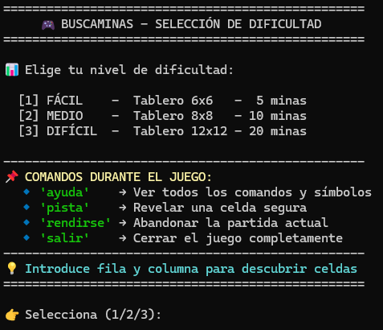
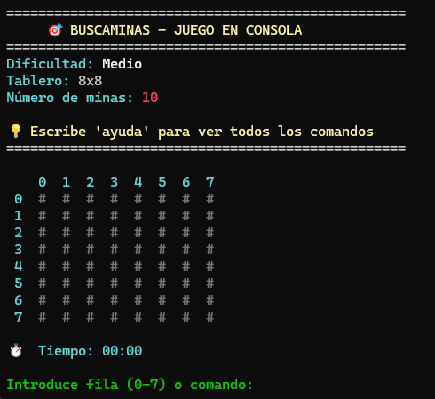
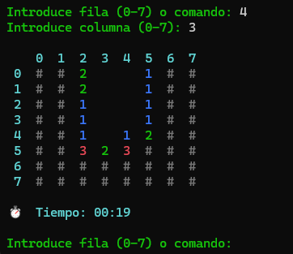
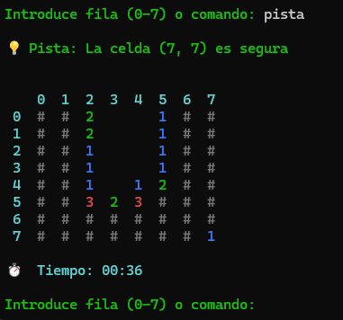
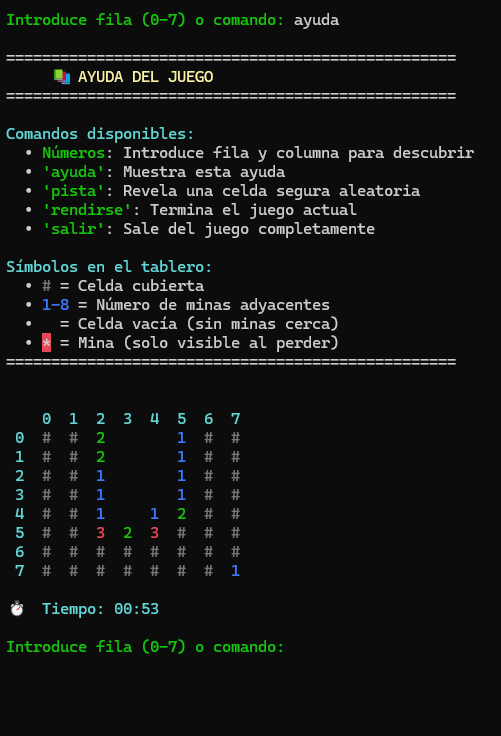
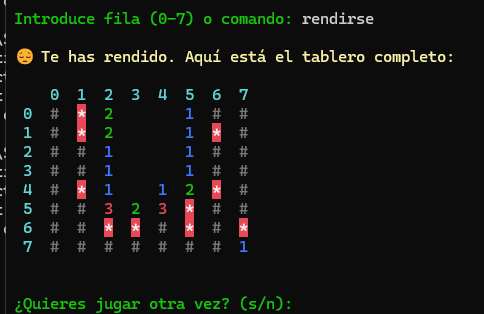

Documentación - Buscaminas en Python¶
Objetivo del Documento
Este documento explica detalladamente el código del juego BuscaMinas desarrollado en Python para consola. Está diseñado para entender cada parte del código y poder entender el código.
Descripción General¶
El BuscaMinas es un juego de lógica donde el jugador debe descubrir todas las celdas del tablero que no contienen minas.
Condiciones de Victoria / Derrota
- GANAS: Descubres todas las celdas seguras (sin minas).
- PIERDES: Descubres una celda con mina.
Características implementadas¶
| Característica | Descripción |
|---|---|
| Colores ANSI | Mejora visual en consola para una experiencia moderna. |
| Cronómetro | Mide el tiempo de juego en tiempo real. |
| Puntuaciones | Guarda los mejores tiempos en un archivo JSON. |
| Seguridad | "Primera jugada protegida": nunca pisas mina al empezar. |
| Pistas | Sistema de ayuda que revela celdas seguras. |
| Dificultad | 3 niveles ajustables (Fácil, Medio, Difícil). |
{kind=link}

Estructura del Programa¶
El código está dividido en 12 partes lógicas:
Ver estructura detallada
BuscaMinas.py
│
├── PARTE 0: Importación de librerías
├── PARTE 1: Configuración y Colores
├── PARTE 2: crear_tablero()
├── PARTE 3: colocar_minas()
├── PARTE 4: calcular_numeros()
├── PARTE 5: crear_tablero_visible()
├── PARTE 6: mostrar_tablero()
├── PARTE 7: descubrir_celda()
├── PARTE 8: verificar_victoria()
├── PARTE 9: Funciones auxiliares (pistas, records)
├── PARTE 10: menu_dificultad()
├── PARTE 11: jugar() - Función principal
└── PARTE 12: Punto de entrada (main)
Importación de Librerías¶
import random # Para generar posiciones aleatorias de minas
import time # Para el cronómetro del juego
import json # Para guardar/cargar puntuaciones
import os # Para verificar si existe el archivo de puntuaciones
| Librería | Uso específico |
|---|---|
random |
random.randint() genera posiciones aleatorias para minas |
time |
time.time() obtiene el tiempo actual para calcular duración |
json |
json.load() y json.dump() para guardar récords en archivo |
os |
os.path.exists() verifica si existe archivo de puntuaciones |
Configuración y Colores¶
Variables Globales¶
FILAS = 8 # Se modifica según dificultad
COLUMNAS = 8 # Se modifica según dificultad
NUM_MINAS = 10 # Se modifica según dificultad
Variables Globales
Estas variables son globales y se modifican en la función jugar() según la dificultad elegida.
Diccionario de Dificultades¶
DIFICULTADES = {
'1': {'nombre': 'Fácil', 'filas': 6, 'columnas': 6, 'minas': 5},
'2': {'nombre': 'Medio', 'filas': 8, 'columnas': 8, 'minas': 10},
'3': {'nombre': 'Difícil', 'filas': 12, 'columnas': 12, 'minas': 20}
}
Clase Colores (ANSI)¶
class Colores:
RESET = '\033[0m' # Restablece colores
ROJO = '\033[91m' # Para minas y errores
VERDE = '\033[92m' # Para mensajes de éxito
AZUL = '\033[94m' # Para el número 1
# ... más colores
¿Qué son los códigos ANSI?
Son secuencias de escape (\033[) que permiten cambiar colores en la terminal. El formato es \033[CODIGOm.
Funciones del Tablero¶
PARTE 2: crear_tablero()¶
Propósito: Crea una matriz vacía que representa el tablero interno (con minas y números).
def crear_tablero():
tablero = []
for i in range(FILAS):
fila = []
for j in range(COLUMNAS):
fila.append(0) # 0 = sin mina
tablero.append(fila)
return tablero
Explicación paso a paso
- Crea una lista vacía
tablero - Por cada fila, crea una lista vacía
fila - Por cada columna, añade un
0a la fila - Añade la fila completa al tablero
- Retorna la matriz
Ejemplo de resultado (6x6):
 PARTE 3:
PARTE 3: colocar_minas()¶
Propósito: Coloca las minas en posiciones aleatorias del tablero.
def colocar_minas(tablero, num_minas):
minas_colocadas = 0
while minas_colocadas < num_minas:
fila = random.randint(0, FILAS - 1)
columna = random.randint(0, COLUMNAS - 1)
if tablero[fila][columna] != -1: # Si no hay mina
tablero[fila][columna] = -1 # Coloca mina (-1)
minas_colocadas += 1
Representación de valores:
| Valor | Significado | Icono |
|---|---|---|
-1 |
Mina | |
0 |
Sin minas adyacentes |  |
1-8 |
Número de minas adyacentes |  - -  |
PARTE 4: calcular_numeros()¶
Propósito: Calcula cuántas minas hay alrededor de cada celda.
def calcular_numeros(tablero):
for fila in range(FILAS):
for columna in range(COLUMNAS):
if tablero[fila][columna] != -1: # Si NO es mina
minas_adyacentes = 0
# Revisa las 8 direcciones
for i in range(-1, 2): # -1, 0, 1
for j in range(-1, 2): # -1, 0, 1
nueva_fila = fila + i
nueva_columna = columna + j
# Verifica límites
if (0 <= nueva_fila < FILAS and
0 <= nueva_columna < COLUMNAS):
if tablero[nueva_fila][nueva_columna] == -1:
minas_adyacentes += 1
tablero[fila][columna] = minas_adyacentes
Visualización de las 8 direcciones
PARTE 5: crear_tablero_visible()¶
Propósito: Crea el tablero que ve el jugador (todo cubierto con #).
def crear_tablero_visible():
tablero_visible = []
for i in range(FILAS):
fila = []
for j in range(COLUMNAS):
fila.append('#') # '#' = celda cubierta
tablero_visible.append(fila)
return tablero_visible
Diferencia entre tableros:
| Tablero | Contenido | Ejemplo |
|---|---|---|
tablero (interno) |
Minas (-1) y números | [[-1, 1, 0], [1, 1, 0]] |
tablero_visible |
Lo que ve el jugador | [['#', '#', '#'], ['#', '#', '#']] |
PARTE 6: mostrar_tablero()¶
Propósito: Imprime el tablero con formato legible y colores.
def mostrar_tablero(tablero_visible):
# Muestra encabezado con números de columna
print("\n" + Colores.CIAN + " ", end="")
for col in range(COLUMNAS):
print(f"{Colores.BOLD}{col:2d}{Colores.RESET}{Colores.CIAN} ", end="")
print(Colores.RESET)
# Muestra cada fila
for i, fila in enumerate(tablero_visible):
print(f"{Colores.CIAN}{Colores.BOLD}{i:2d}{Colores.RESET} ", end="")
for celda in fila:
# Aplica colores según el contenido
if celda == '#':
# Gris para celdas cubiertas
pass
elif celda == '*':
# Rojo para minas
pass
# ... más condiciones
{kind=link}

PARTE 7: descubrir_celda() - IMPORTANTE¶
Propósito: Descubre una celda y, si tiene 0 minas adyacentes, descubre automáticamente las vecinas.
Algoritmo usado: Flood Fill iterativo
Usamos una pila en lugar de recursión para evitar errores de Stack Overflow en tableros grandes.
def descubrir_celda(tablero, tablero_visible, fila, columna):
# Validaciones iniciales
if fila < 0 or fila >= FILAS or columna < 0 or columna >= COLUMNAS:
return True
if tablero_visible[fila][columna] != '#':
return True
if tablero[fila][columna] == -1:
return False # ¡Es una mina!
# Usa una PILA para procesar celdas
pila = [(fila, columna)]
while pila:
f, c = pila.pop()
# Validaciones
if f < 0 or f >= FILAS or c < 0 or c >= COLUMNAS:
continue
if tablero_visible[f][c] != '#':
continue
valor = tablero[f][c]
if valor == 0:
tablero_visible[f][c] = ' ' # Celda vacía
# Añade las 8 celdas adyacentes a la pila
for i in range(-1, 2):
for j in range(-1, 2):
if i != 0 or j != 0:
pila.append((f + i, c + j))
else:
tablero_visible[f][c] = str(valor)
return True
{kind=link}

 PARTE 8:
PARTE 8: verificar_victoria()¶
Propósito: Comprueba si el jugador ha ganado.
def verificar_victoria(tablero_visible):
celdas_cubiertas = 0
for fila in tablero_visible:
for celda in fila:
if celda == '#':
celdas_cubiertas += 1
# Gana si solo quedan cubiertas las celdas con minas
return celdas_cubiertas == NUM_MINAS
Lógica de victoria
- Total de celdas:
FILAS × COLUMNAS - Celdas con minas:
NUM_MINAS - Celdas seguras:
Total - NUM_MINAS - Victoria: Cuando todas las celdas seguras están descubiertas → las únicas cubiertas (
#) son las minas.
Funciones Auxiliares¶
proteger_primera_jugada()¶
Propósito: Si la primera jugada es una mina, la mueve a otro lugar.
def proteger_primera_jugada(tablero, fila, columna):
if tablero[fila][columna] == -1:
tablero[fila][columna] = 0 # Quita la mina
# Busca nueva posición
while True:
nueva_fila = random.randint(0, FILAS - 1)
nueva_columna = random.randint(0, COLUMNAS - 1)
if (nueva_fila != fila or nueva_columna != columna) and \
tablero[nueva_fila][nueva_columna] != -1:
tablero[nueva_fila][nueva_columna] = -1
break
calcular_numeros(tablero) # Recalcula números
cargar_puntuaciones() y guardar_puntuacion()¶
Propósito: Gestión de récords usando JSON.
def guardar_puntuacion(nombre_dificultad, tiempo):
puntuaciones = cargar_puntuaciones()
tiempo_redondeado = round(tiempo, 2)
if nombre_dificultad not in puntuaciones or \
tiempo_redondeado < puntuaciones[nombre_dificultad]:
puntuaciones[nombre_dificultad] = tiempo_redondeado
with open(ARCHIVO_PUNTUACIONES, 'w', encoding='utf-8') as f:
json.dump(puntuaciones, f, indent=4, ensure_ascii=False)
return True # Es récord
return False
Buenas prácticas
Usamos round(tiempo, 2) para guardar tiempos legibles (ej: 12.56) y ensure_ascii=False para que Fácil no se guarde como F\u00e1cil.
obtener_celda_segura()¶
Propósito: Encuentra una celda sin mina que aún no se ha descubierto (para pistas).
def obtener_celda_segura(tablero, tablero_visible):
celdas_seguras = []
for fila in range(FILAS):
for columna in range(COLUMNAS):
if tablero_visible[fila][columna] == '#' and \
tablero[fila][columna] != -1:
celdas_seguras.append((fila, columna))
if celdas_seguras:
return random.choice(celdas_seguras)
return None
{kind=link}

Flujo Principal del Juego¶
PARTE 11: Función jugar()¶
Esta es la función más importante. Controla todo el flujo del juego:
def jugar(filas, columnas, num_minas, nombre_dificultad):
# 1. Actualiza variables globales
global FILAS, COLUMNAS, NUM_MINAS
FILAS = filas
COLUMNAS = columnas
NUM_MINAS = num_minas
# 2. INICIALIZACIÓN
tablero = crear_tablero()
colocar_minas(tablero, NUM_MINAS)
calcular_numeros(tablero)
tablero_visible = crear_tablero_visible()
juego_activo = True
primera_jugada = True
tiempo_inicio = time.time()
# 3. BUCLE PRINCIPAL
while juego_activo:
mostrar_tablero(tablero_visible)
entrada = input("Introduce fila o comando: ")
# 4. PROCESA COMANDOS
if entrada == 'ayuda':
mostrar_ayuda()
elif entrada == 'pista':
# Revela celda segura
pass
elif entrada == 'rendirse':
# Muestra todas las minas
pass
elif entrada == 'salir':
return
# 5. PROCESA JUGADA
fila = int(entrada)
columna = int(input("Columna: "))
# Protege primera jugada
if primera_jugada:
proteger_primera_jugada(tablero, fila, columna)
primera_jugada = False
# Descubre celda
exito = descubrir_celda(tablero, tablero_visible, fila, columna)
# 6. VERIFICA RESULTADO
if not exito:
print("💥 GAME OVER - Pisaste una mina")
juego_activo = False
elif verificar_victoria(tablero_visible):
print("🎉 ¡FELICIDADES! Has ganado")
juego_activo = False
{kind=link}

{kind=link}

PARTE 12: Punto de Entrada¶
if __name__ == "__main__":
configuracion = menu_dificultad()
jugar(configuracion['filas'],
configuracion['columnas'],
configuracion['minas'],
configuracion['nombre'])
¿Qué significa if __name__ == \"__main__\"?
Este código solo se ejecuta cuando corres el archivo directamente (python BuscaMinas.py), no cuando lo importas como módulo.
Diagrama de Flujo¶
flowchart TD
A[Inicio] --> B[menu_dificultad]
B --> C[jugar - Inicialización]
C --> D[Mostrar tablero]
D --> E{Entrada del jugador}
E -->|Comando| F{Tipo de comando}
F -->|ayuda| G[Mostrar ayuda]
F -->|pista| H[Revelar celda]
F -->|rendirse| I[Game Over]
F -->|salir| J[Fin]
E -->|Coordenadas| K{Primera jugada?}
K -->|Sí| L[Proteger primera jugada]
K -->|No| M[Descubrir celda]
L --> M
M --> N{¿Es mina?}
N -->|Sí| O[GAME OVER]
N -->|No| P{¿Victoria?}
P -->|Sí| Q[¡FELICIDADES!]
P -->|No| D
G --> D
H --> D
O --> R{¿Jugar de nuevo?}
Q --> R
R -->|Sí| B
R -->|No| JConceptos Clave¶
1. Estructuras de Datos¶
| Estructura | Uso |
|---|---|
| Lista de listas (Matriz) | Tablero de juego |
| Diccionario | Configuraciones de dificultad, colores |
| Tupla | Coordenadas (fila, columna) |
| Pila (lista como stack) | Flood Fill iterativo |
2. Conceptos de Programación¶
| Concepto | Dónde se usa |
|---|---|
| Variables globales | FILAS, COLUMNAS, NUM_MINAS |
| Bucles anidados | Recorrer matriz, calcular adyacentes |
| Algoritmo Flood Fill | descubrir_celda() |
| Manejo de archivos | Guardar/cargar JSON |
| Clases | class Colores |
| Manejo de excepciones | try/except en jugar() |
3. Algoritmo Flood Fill Explicado¶
Pasos del algoritmo
- Añade la celda inicial a la pila
- Mientras la pila no esté vacía:
- Saca una celda de la pila
- Si ya está descubierta o fuera de límites, continúa
- Si tiene valor 0:
- Márcala como descubierta (' ')
- Añade las 8 celdas adyacentes a la pila
- Si tiene valor 1-8:
- Márcala con ese número (no propaga)
Preguntas Frecuentes¶
¿Por qué usamos -1 para las minas?
Porque las celdas normales tienen valores de 0 a 8 (minas adyacentes). Usar -1 evita confusiones y simplifica las comprobaciones lógicas if valor == -1.
¿Por qué hay dos tableros?
El tablero interno guarda la "verdad" del juego (minas y números). El tablero_visible es lo que ve el jugador y va actualizándose según descubre celdas.
¿Por qué usar pila en lugar de recursión?
La recursión tiene un límite de profundidad en Python (~1000 llamadas). En un tablero grande, el Flood Fill podría superar ese límite y causar un error.
¿Cómo funciona la protección de primera jugada?
Si el jugador selecciona una celda con mina en su primer turno, esa mina se mueve a otra posición aleatoria y se recalculan todos los números.
¿Qué pasa si borras el archivo JSON?
El programa utiliza os.path.exists() para comprobarlo. Si no existe, simplemente crea uno nuevo sin dar error.
Resumen Final¶
| Componente | Función Principal |
|---|---|
| Tablero interno | Almacena minas y números |
| Tablero visible | Muestra estado al jugador |
| Flood Fill | Descubre celdas automáticamente |
| Sistema de puntuaciones | Guarda mejores tiempos en JSON |
| Colores ANSI | Mejora visual |
| Comandos especiales | ayuda, pista, rendirse, salir |
Documentación finalizada - Buscaminas en Python